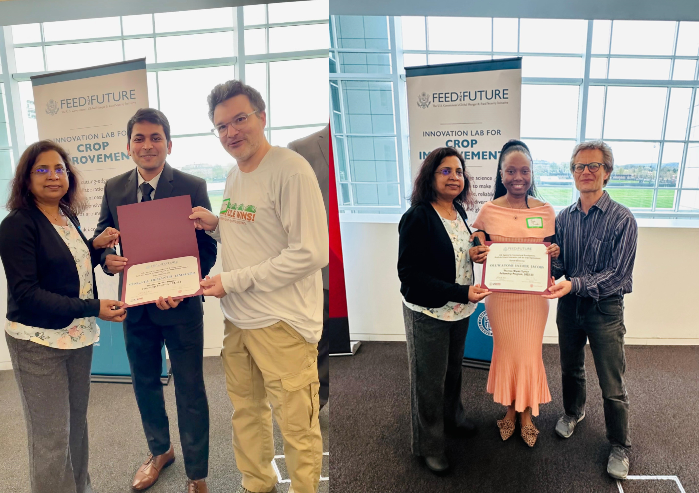

Delaware State University
Plant Molecular Breeding Lab
Richmond was selected for the Bridge Scholarship Award (2024) by the American Society of Agronomy (ASA), Crop Science Society of America (CSSA), and Soil Science Society of America (SSSA) to present his research at the CSSA International Annual Conference in San Antonio, Texas.


News links:
https://www.desu.edu/news/2024/03/dsus-dr-kalpalatha-melmaiee-honored- international-womens-dayhttps://www.desu.edu/news/2024/06/dsu-researchers-travel-senegal-meet-west-african- partners
https://baytobaynews.com/stories/delaware-state-university-research-joins- project-to-develop-climate-change-resistant-crops,121284
https://www.desu.edu/news/2022/05/dr-kalpalatha-melmaiee-named-fulbright- specialist
https://cals.cornell.edu/news/2022/06/inaugural-turner-fellows-advance-global- food-security
https://delawarebusinesstimes.com/news-briefs/delaware-state-university-300k- genetics/
https://www.desu.edu/news/2023/05/dsu-usaid-global-resilience-day-conf-held- campus
https://www.desu.edu/news/2023/03/dr-melmaiee-leads-blueberry-research-team
https://hbcuconnect.com/content/359691/usda-awards-delaware-state-university- 599-905-grant-for-strawberry-research
https://www.ext.vsu.edu/connection-vol-5/vsu-agricultural-researchers-awarded- more-than-1-million-in-grants
March 30, 2021 - Ms. Lungowe Mulozi successfully defended her thesis on “Physiological and Transcriptomic Analysis of Sugar Maple (Acer saccharum) under Drought Stress”
March 29, 2021 - Rosalyn Battle successfully defended her thesis on “Efficacy of Potassium-Silicate on Strawberry for Agronomic Traits and Anti-Fungal Activity”
March 26, 2021 - Mr. Byron Manzanero successfully defended his thesis on “Evaluation of Genetic Diversity in Blueberry (Vaccinum spp.) Germplasm utilizing Genotyping-by-Sequencing”